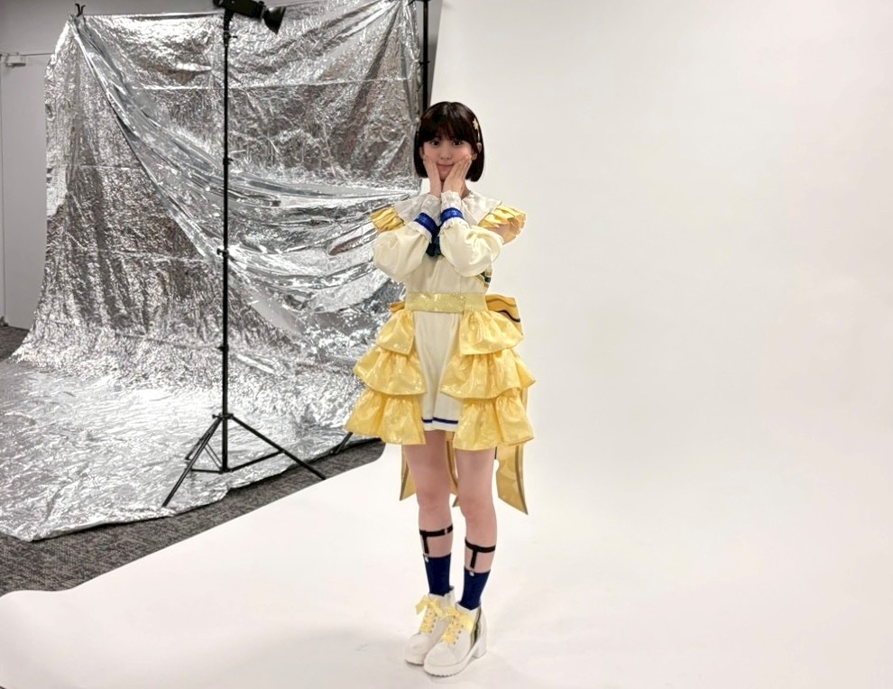

橘杏咲の立ち話もなんですから！ 第26回橘杏咲的“站着聊可说不完！” 第26回
皆さんこんにちは🌟
大家好🌟
もうこのコラムが掲載されている頃には、オルケリアのライブも終わっているんですよね。夏もほとんど終わって、もう9月。非常に怖いです。無事に終わっているのでしょうか💭
等到这篇专栏刊出的时候，ORCHERIA 的演唱会也已经落幕了吧。夏天也差不多步入尾声，转眼就是9月了。好吓人啊。演出应该顺利结束了吧💭
絶賛リハーサル終わりのタイミングでこのコラムを書いているので、今の私はまだドキドキ真っただ中です。でも、初めての5人でのライブということで、今はギリ緊張よりも楽しみな気持ちのほうが大きいです。そう思えている自分に少し安心しつつ、やっぱり心の奥底では緊張がうごめいている〜。
我是在刚结束彩排的节骨眼上写这篇专栏的，所以此刻的我正处在心跳加速的紧张之中。不过，因为是第一次5个人一起开演唱会，现在期待的心情还勉强压过紧张一头。一方面为自己能这么想而稍微松了口气，但心底深处果然还是有紧张感在蠢蠢欲动〜。
その奥底の緊張がたまに顔を出すせいか、今回のコラムは少しナイーブ色強めかもしれませんがご了承ください……。元気！ とっても元気ではあるので！！🌟
或许是因为心底的这份紧张偶尔会冒出来作祟，本回专栏可能会稍微带上一点敏感细腻的色彩，还请大家多多包涵……。不过我很有精神！超级有精神的哦!!🌟
ライブって、始まる前が一番緊張する気がします。始まってしまえば、きっと楽しいで頭がいっぱいになるはず。だって、客席にいる皆さんが楽しそうだから。
总觉得演唱会啊，开场前才是最让人紧张的时候。只要真正开始了，脑海里一定会被“好开心”填得满满当当。毕竟，台下观众席里的大家看起来都那么开心呀。
これは本当に大きいです。ライブはやっぱりインタラクティブなものですよね。客席にいる皆さんと演者、スタッフさん、それぞれがその場で与え、与えられることで成り立っている。皆さんが楽しそうだと、私たちも自然と楽しくなってしまうんです☺︎
这一点真的非常重要。演唱会果然是一种双向互动的体验呢。是由台下的各位观众、台上的演出者以及工作人员在现场彼此给予、相互回馈共同成就的。只要大家看起来很享受，我们也会自然而然地跟着开心起来☺︎
私は昔、人に観られるということが少し、というかかなり苦手でした。ピアノや劇の発表会で、ステージの上から家族や知り合いを見つけてしまったときの、あの感覚。本当に苦手だったんです😿もちろん観に来てくれるのはうれしいし、みんな大好きなのは大前提。ただ、期待やワクワクのこもった目線を感じると、自分はそれに見合うものを出せるのかと不安になって、ステージからの逃亡計画を企て始めます。
我以前其实有点——不如说是相当不擅长“被人看着”。在钢琴或话剧发表会上，站在舞台上突然发现台下坐着家人或熟人时的那种感觉，我以前真的特别受不了😿 当然，大家来看我我是很开心的，最喜欢大家也是大前提。只是，一旦感受到充满期待与雀跃的目光，我就会不安地想“自己真的能拿出配得上这份期待的表现吗”，然后就开始在脑内密谋从舞台上逃跑的计划。
単純に恥ずかしがり屋だったというのもあると思います。でも不思議と、知らない人に観られるのはそこまで嫌じゃなかったんですよね。例えば、知らない同級生のお母様とか。
我想这也单纯是因为我以前很怕生爱害羞吧。但奇妙的是，被陌生人看着倒并没有那么排斥。比如说，不认识的同班同学的妈妈之类的。
きっと、自分に興味がないからなんだと思います。誰だろう、とりあえず観てみようくらいの目線。私はむしろ、そういう目線は嫌いじゃなくて、なんならやるじゃん！と思われたい。そう思うと、逆にやる気が出たりして（笑）。
我想大概是因为对方原本对我没什么兴趣吧——那种“这是谁呀，姑且看看好了”的目光。我反倒不讨厌那样的视线，甚至还想让对方觉得“哟，挺厉害的嘛！”。这么一想，反而会燃起干劲呢（笑）。
ただ、その目線が次の発表のときには興味関心に変わってしまっていると、もう駄目というか、緊張が倍増してしまうんです。なんて面倒くさい！天邪鬼！😾💧 今でもその感覚はほんの少し残っています。でも、私のことを知ってくれていて、なおかつ少しでも好きでいてくださる方から向けられる興味や期待は、素直にうれしいと思えます。
只不过，要是到了下一次发表会，那种视线变成了真正的关注与兴趣，我就瞬间不行了，或者说紧张感会成倍飙升。真够麻烦的！简直是个别扭鬼！😾💧 直到现在，这种感觉心里还残存着一丁点儿。不过，如果是来自认识我、并且哪怕有一点点喜欢我的人所投来的关注与期待，我已经能够坦率地感到开心了。
いや、めちゃめちゃうれしい！ 表に立つようになって、気がつけば4年ほど経って、ありがたいことに応援していますと言ってくださる方も増えて……それは本当に本当に嬉しいことで！ いただける期待にはこれからも応え続けていきたいです。期待してもらえるって、贅沢なことですしね🫶🏻🤍 それ自体はまっったく苦ではなくて、むしろもっと頑張ろうと思わせてもらえることのほうが多いです。
不对，是超级超级开心！站到台前工作以来，不知不觉已经过去了大概4年，很感激越来越多的人对我说“我支持你”……这真的是一件无比无比开心的事！对于大家给予我的期待，今后我也想一直回应下去。能被人寄予期待，本身就是一件很奢侈的事嘛🫶🏻🤍 这件事本身一点都不让我觉得痛苦，反而更多时候是在激励着我更加努力。
昔の発表会のときのようなもどかしさは、今はほぼ無いです！ それぞれが私に求めてくださるものは違うでしょうし、きっとこうしなきゃという正解もない。だから、あまり考えすぎず、今できることを頑張ればいいのかなと思っています！ それを好きだと受け入れてくださる人を大切に。。
像从前发表会时那种焦躁别扭的心情，现在几乎已经没有了！每个人对我有所期待的地方大概都不一样，世上也一定不存在“必须这样做”的唯一标准答案。所以我觉得，别想太多，只要把眼下能做的事尽力做好就行了！然后好好珍惜那些愿意喜欢并接纳这样的我的人……
最近は、自分のポジティブさにめっきり自信がありません！ 自分に興味があるようで、あまり興味がない。自分のことは好きだし、好きじゃない。とにかく曖昧です👊🏻 ネガティブとは自分のことを想っているからこその考えでもあるのかな、とも思ったり。もちろん例外もあるとは思いますが。私のポジティブはドライなほうのポジティブなのかもしれないですね。いや？でも私わがままだし気まぐれだし自分に甘いからな……? でも変なところで関心が一気にいなくなるし、どうでもよくなっちゃうし……人間って本当に難しい。ただの恥ずかしがり屋で寂しがり屋の2店舗経営者なだけか（笑）。
最近，我对自己的积极乐观真是彻底没了自信！好像对自己很感兴趣，又好像没什么兴趣；既喜欢自己，又不喜欢自己，总之模棱两可的👊🏻 有时候也会觉得，消极悲观说不定正是因为太在意自己才会产生的念头。当然肯定也有例外啦。我的乐观，也许是偏淡然抽离的那种乐观吧。不对？可我又任性又善变，还对自己特别纵容来着……？但又会在莫名其妙的地方一下子失去兴趣，变得无所谓起来……人啊，真是太复杂了。说到底，我大概只是个同时经营着“害羞鬼”和“怕寂寞鬼”两家店的老板罢了（笑）。
でも、声優というお仕事は、自分ではない誰かを演じることができるので、楽しいし、救われることもたくさんあります。ステージに立つときも、1人で立っているというより、そこに“彼女”がいてくれるから、私は今を楽しめているんだろうなと思います。自分自身を、1人の人間として見て、まっすぐ向き合うのって本当に難しいこと。毎日、自分の未熟さを痛感する日々ですが、それでも楽しいし、もっとやりたいという気持ちも増え続けてます。なので、きっと今はこれでいいんだろうなぁと思います💭🌟
不过，声优这份工作能够让我去演绎不是自己的另一个人，不仅很快乐，也让我无数次得到了救赎。站在舞台上时也是如此，与其说是独自一人站着，不如说正是因为有“她”陪伴在那里，我才能尽情享受当下吧。把“自己”当作一个独立的人去审视、去坦然直面，真的是一件好难好难的事。虽然每天都在深切体会着自己的不成熟，但即便如此依然觉得很快乐，“想做得更多”的心情也在不断增长。所以我想，现在这样一定就挺好的吧💭🌟
思うままに書き殴ったら、とっ散らかってしまった。何をどう伝えたいとかも無い！ はず。自分の気持ちをそのまま文字起こしすると、少し彩度薄めな文章になってしまいがちな私ですが、気持ちはとっても元気です！（笑）。 ちょっと長めの立ち話だと思って、独り言くらいの気持ちで聞き流してやってください！
随心所欲地一通乱写，结果写得东拉西扯的。其实我也没什么非要怎么传达不可的东西！大概吧。只要把自己的心情原封不动地写成文字，我总是容易写出色彩饱和度偏低的文章，但我的心态可是超级元气满满的哦！（笑）就当这是一场稍微长了一点儿的站着闲聊，当作我的自言自语随便听听就好啦！

(来月のコラムでライブのお話もできたらいいなの気持ち)
（抱着“要是下个月的专栏里也能聊聊演唱会的事就好了”的心情）
去年も言っていましたが、大学生の夏休みは長いもので9月もまるっとお休みなんですよね。(例外ももちろん有)ということは、夏らしいことをする時間はもう少し残っています。8月もちょこちょこ夏を楽しみました。初っ端飛ばしすぎたので、今月は少しだけお裾分け。
去年也说过，大学生的暑假很长，整个9月也都还在放假呢（当然也有例外）。也就是说，用来做些充满夏日气息的事情的时间还剩那么一点儿。8月我也零零散散地享受了夏天。因为前半段聊得太放飞了，这个月就只跟大家分享一小部分吧。
1番はやっぱり観劇！8月は3回観劇に行けました！ 観劇は前々から予約することが多いので、ドタバタな時期に重なるとおっと？ となりますが、観劇後に後悔したことは一度もないです。行ってよかったって毎回思える、すごいエンタメ✨
排第一的果然还是看舞台剧！8月我去了3次剧场！看剧通常都是很早就提前订好票的，碰上忙得团团转的时期难免会心里咯噔一下“哎呀？”，但看完之后我一次都没有后悔过。每次都会由衷觉得“幸好来了”，真是了不起的娱乐艺术✨
その中でも1作品ピックアップして少しご紹介を。劇団四季さんのミュージカル『バック・トゥ・ザ・フューチャー』を妹と一緒に観に行きました！
今天就从中挑出一部作品稍微介绍一下吧。我和妹妹一起去看了四季剧团的音乐剧《回到未来》！
開幕直後のチケットを家族で取っていたのですが、体調不良で行けなくなってしまってからかなりの時間が経ってしまい、今回やっと初見でした。
其实早在刚开幕那会儿我们一家人就抢好了票，结果因为我身体不适没能去成，这一晃就隔了好久好久，这次总算是第一次看到。
本当に、ほんっっっっっとうに面白すぎた！！ なんだこれは！！ かなり新感覚でした。映画を昔観た記憶があったのですが、全く内容を覚えておらず、ストーリーも0から楽しんでいました。でもこの作品はストーリーを知ってる知らないに関わらず最高に楽しめます。とにかく演出がすごすぎる。自分もマーティと一緒にタイムスリップした感覚になります。没入感がすごい。
真的、真————的太好看太有趣了!! 这是什么神仙舞台啊!! 体验超级新奇。印象里我小时候看过电影版，但剧情已经忘得一干二净了，所以这次完全是从零开始享受故事的。不过这部作品无论你知不知道剧情，都能看得无比尽兴。总之舞台演出实在太震撼了，让人感觉自己也和马蒂一起穿越了时空，沉浸感绝了。
あとやはり音楽。生演奏なんですよ！！生演奏の迫力、すごい！！ 曲数もたっっぷりで耳が幸せ。歌っていいなぁ。ショーやライブみたいな場面も多く、言葉を選ばずにいうと、、ぶち上がります。かなり近い席で観られたというのもあり、細かい表情や動き、装飾や小物も見ることができて楽しかった…。早くもう一度観たい。ミュージカルをあまり観たことがない方でも10000%楽しめる作品だと思うのでぜひ……。テンション上がってTシャツも買っちゃった。
还有果然不能不提音乐。全程都是现场乐队演奏哦!! 现场演奏的震撼力太惊人了!! 曲目数量也超〜级丰富，耳朵简直享福。唱歌真好呀。剧里还有好多像大型秀场和演唱会一样的场面，不加修饰地直说的话……简直嗨爆了。而且这次坐的位置离舞台非常近，连演员细微的表情、动作，还有布景装饰和道具细节都看得清清楚楚，太开心了……好想快点再去二刷啊。我觉得哪怕是平时不太看音乐剧的人，也能10000%乐在其中，大家一定要去看看……我当时情绪高涨到顺手连 T 恤都买下来了。
あとはいつメンの友人の誕生日を祝ったり、久々に会う中高の友人たちとバーベキューに行ったり。直前までお仕事があったのですが、みんなで車で迎えに来てくれて！ 友人の車に乗せてもらうのは久しぶりだったので、めちゃくちゃテンション上がりました。車内でもずっと喋ってた🚘🎶
此外，我还给常聚的死党过了生日，又和许久未见的初高中朋友们一起去烧烤了。出发前一刻我都还在工作，结果大家特意开车来接我！好久没坐朋友开的车了，我整个人兴奋得不行，在车里也一直聊个不停🚘🎶
もしかしてかなり夏が充実してきているのでは！！ でも私は貪欲チャンネルなので、まだまだ楽しみたいです。9月は一日遠出したりしたいな。アイドルさんのライブとか行きたいな、キラキラを浴びたい。悔いのないラスト夏休みにできるよう頑張るぞ！
说不定我的这个夏天已经过得相当充实了呢!! 不过我可是常年开着“贪心频道”的，还想玩得更尽兴。9月想找一天去远足呀，也想去看偶像的演唱会，沐浴一下闪闪发光的能量！为了度过一个不留遗憾的最后暑假，我要加油冲啦！
前半少しマインド的なお話に筆が乗ってしまったので、最近のマイブームとか楽しいお話あんまりできなかったな。来月はもっと充実させて楽しいお話たくさん持って帰ってきますね。
因为前半段聊心态聊得有点收不住笔，结果没怎么讲最近的个人爱好啊、开心的小事什么的呢。下个月我会把生活过得更充实，带回一大堆开心的故事跟大家分享哦。
最近はAfternoon Tea に通い詰めすぎていて、無限にポイントが溜まっています。Afternoon Tea BRANDどこの店舗も美味し楽しすぎて！降りた駅にあると迷わず入っちゃいます。やっぱりここのトマトパスタが好き〜！ 最近はLOVE & TABLE のクレープにもハマってます。バターシュガー！シンプルイズザベスト！
最近我实在太频繁地往 Afternoon Tea 跑了，积分正无限累积中。Afternoon Tea BRAND 旗下的每家店都又好吃又好逛！只要下车的车站里有分店，我就会毫不犹豫地走进去。果然还是最爱他们家的番茄意面〜！最近还迷上了 LOVE & TABLE 的可丽饼。黄油砂糖味！Simple is the best，简单就是最棒的！
あと、最近自分へのご褒美にモフモフネコチャンという名前のハンカチを購入しました。自分にハンカチを買うのは初めてなのですが、その可愛すぎる商品名、色と柄に一目惚れして買っちゃいました。手を拭くだけで気分が上がるのでいいハンカチを自分のために買うって良いかも😼♡
另外，最近我买了一条名叫“毛茸茸小猫咪（モフモフネコチャン）”的手帕当作给自己的奖励。虽然这是我第一次给自己买手帕，但看到那可爱过头的商品名、配色和图案，我瞬间一见钟情就拿下了。光是用它擦擦手都能让心情变好，为自己买条好手帕或许挺不错的呢😼♡
最近また黒白ばかり着てしまうターンがきましたが、バッグの中はキラッキラのパステルで埋め尽くされてます。ほぼピンク。やっぱり、自分の機嫌は自分で取らなくちゃ。
最近虽然又迎来了总爱只穿黑白两色的周期，但包包里面全塞满了闪亮亮的马卡龙粉彩色小物，几乎清一色都是粉色。果然，自己的好心情得靠自己来哄嘛。
では今回もここら辺で。今月の目標はズバリ
那么这一回也差不多聊到这里吧。本月的目标就是——
「ちゃんと食べて寝る」です。
《好好吃饭，好好睡觉》。
最近またこの意識が疎かになってきている気がしてきたので改めて頭に叩き込んでおきます。ちゃんとご飯たくさん食べて、夏バテに負けないで！！ あと、たくさん寝て！！！ 心身ともに健康でいるためにはこれらは必須ですからね。
最近总觉得自己在这方面的意识又开始松懈了，所以要重新牢牢刻进脑子里。一定要好好多吃饭，千万别输给苦夏!! 还有，一定要好好多睡觉!!! 想要身心都保持健康，这些可是必不可少的呀。
朝ごはん、明日もちゃんと食べます。
早饭，明天我也会好好吃的。
9月だけど、きっとまだ暑いはず。 油断せずに自分を労わりつつ毎日頑張っていきましょうね。私も頑張る。
虽然已经是9月了，但天气肯定还是很热的。大家千万别掉以轻心，好好关爱自己的同时，一起努力过好每一天吧。我也会加油的。
では〜
那么下次见〜
橘さんに質問！向橘小姐提问！
Q：遂にスマホゲームの課金を解禁しました！（笑）橘さんが最近解禁したことはありますか！（福岡県・佐々木さき）
问：我终于解禁手游氪金了！（笑）请问橘小姐最近有什么“解禁”的事情吗！（福冈县·佐々木さき）
さきさん、ご質問ありがとうございます！
さき，感谢你的提问！
最近解禁したこと……難しい！ そうですね、少しずれてしまうかも知れませんが、自分からご飯に誘う！ でしょうか！ 以前からごくまれにはしていたのですが、あまり積極的に声をかけることが出来なくて。お忙しいだろうしとか、変に色々考えちゃうんですよね。
最近解禁的事……好难答啊！让我想想，虽然可能稍微有点偏题，但应该是“主动约人吃饭！”吧！以前也极偶尔会约一下，但总没法很积极地开口。因为总会瞎想一大堆，比如“对方应该很忙吧”之类的。
でも最近、先輩やあまり最近会っていなかった中高の時の友人に会いたいと自分から声をかけられるようになってきました！ 人と会うのは大好きなので！ 予定を決めるの嬉しい、楽しい。
不过最近，我已经能够主动向前辈，还有好久没见面的初高中朋友开口说“好想见一面呀”！毕竟我本来就超级喜欢和人见面！定下见面行程的感觉真开心、真快乐。
事務所の後輩ちゃんからLINEでご飯のお誘いをもらったことが嬉しくて、じゃあ私も！ と思い、声かけたいリストを作りました（笑）。いつ頃誰に連絡する、みたいな。そしたら声をかけやすくなって、ちょっとだけ成長を感じました。色々、楽しみだな🫶🏻🤍
之前收到事务所后辈妹妹在 LINE 上发来的吃饭邀约，我特别开心，心想“那我也行动起来！”，于是就列了一份“想约人清单”（笑），记上大概什么时候联系谁之类的。这么一来就容易开口多了，感觉自己也稍微成长了一点呢。对接下来的一切都好期待呀🫶🏻🤍